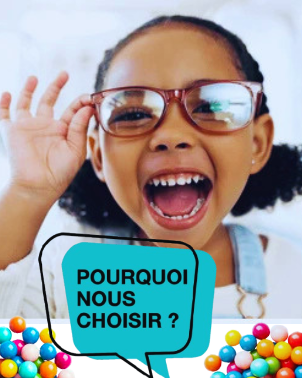

Examen de vue GRATUIT sur rendez-vous
La clarté,
une priorité.
Cabinet d'optique professionnel au Bénin. Nos opticiens diplômés d'État vous accueillent à Cotonou et à Calavi pour prendre soin de votre vision.
Cotonou, Bénin
Calavi, Bénin
0
Ans d'expérience
0
Montures disponibles
0
Satisfaction client
0
Sites au Bénin
Notre engagement
Pourquoi choisir
Pourquoi choisir
Voir + Optic ?
Opticiens diplômés d'ÉtatNotre équipe est certifiée et suit des formations continues pour vous offrir les meilleurs conseils.
Matériel de pointeRéfractomètre numérique, lampe à fente — un équipement professionnel pour un diagnostic précis.
Prix accessibles & transparentsDes tarifs clairs, adaptés aux réalités locales. Pas de mauvaises surprises — vous savez exactement ce que vous payez.
Service personnalisé & chaleureuxChaque patient est unique. Nous prenons le temps d'écouter et de conseiller selon votre mode de vie.
Deux sites pour vous servirPrésents à Cotonou et à Calavi pour être au plus près de vous, où que vous soyez dans la région.

4.9★
Note moyenne
+200 avis clients
+200 avis clients
Votre prochain bilan visuel
est à portée de clic.
Ne remettez pas votre santé visuelle à plus tard. Nous vous attendons à Cotonou et à Calavi.
Prendre rendez-vous maintenant →Sans engagement • Réponse sous 24h • Examen de vue gratuit sur RDV